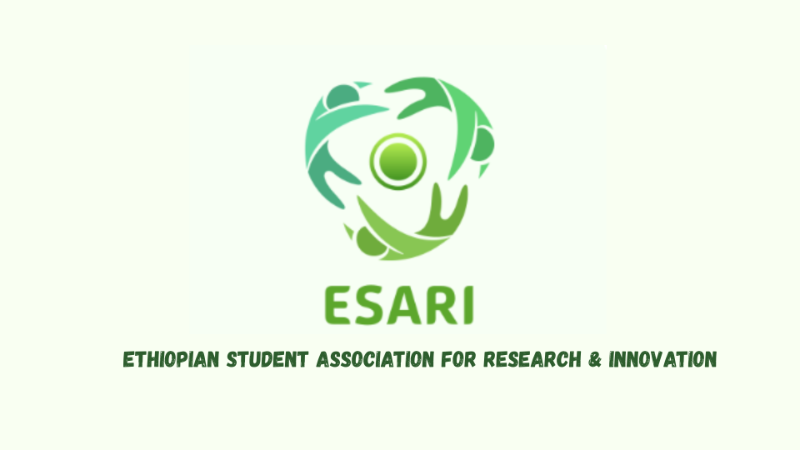

Dear ESARI Applicant,
Thank you for your interest in joining ESARI. After reviewing your application, we are very pleased to inform you that you have been selected for the Summer 2026 Cohort, our first official group of participants.
Please read this entire page carefully. It contains important information about the program and your next steps.
This year marks the beginning of ESARI, a student-led research and innovation initiative created to bring together motivated students, early researchers, and young innovators. Your application demonstrated the curiosity, dedication, and potential we look for in our team members.
After gathering feedback from students and educators—and carefully considering the academic schedules of applicants—we have officially decided to begin the first cohort in August 2026. By then, most students will have completed school & exams, allowing everyone to engage fully without academic pressure.
This start date also gives our team time to finalize:
Your acceptance guarantees your place in the Summer 2026 Cohort. Until the program begins, you are considered an admitted member.
In the coming months, you will receive:
You are not required to begin any activities until August, though occasional updates or forms may be sent before then.
Some applicants submitted certificates, awards, or supporting documents. Please note the following:
ESARI was created to give students meaningful exposure to academic research, critical thinking, digital collaboration, and real-world problem-solving.
Our vision is to create a space where young people can:
As part of our first cohort, you are joining us at an important moment. Your group will help set the culture and direction of ESARI for future participants.
Over the coming months, our team will:
Please expect your Official Onboarding Email closer to the program start date.
ESARI — the Ethiopian Student Association for Research & Innovation — is founded on four core pillars:
Our goal is to build a generation of young scholars capable of producing impactful research and creative solutions on both national and global levels.
As part of this cohort, you will engage in academic writing, research design, teamwork, and innovation-focused tasks. You’ll also contribute to projects that reflect real-world issues and opportunities.
You are joining ESARI as one of our trailblazers — the students who will help shape everything this initiative becomes. Being part of the first cohort means you’re not just participating in a program; you’re helping build it. The decisions we make together, the standards we set, and the projects we launch will guide every future researcher who joins ESARI.
Your curiosity, commitment, and willingness to take part in something new place you at the forefront of this journey. We’re genuinely excited to see what this founding group will accomplish and how each member will contribute to ESARI’s early identity and long-term impact.
We are excited to welcome you to the ESARI 2026 Summer Cohort and look forward to working with you.
Kind regards,
ESARI fellowship Admissions Team
Contact us at:
Responses may take 2–5 business days.